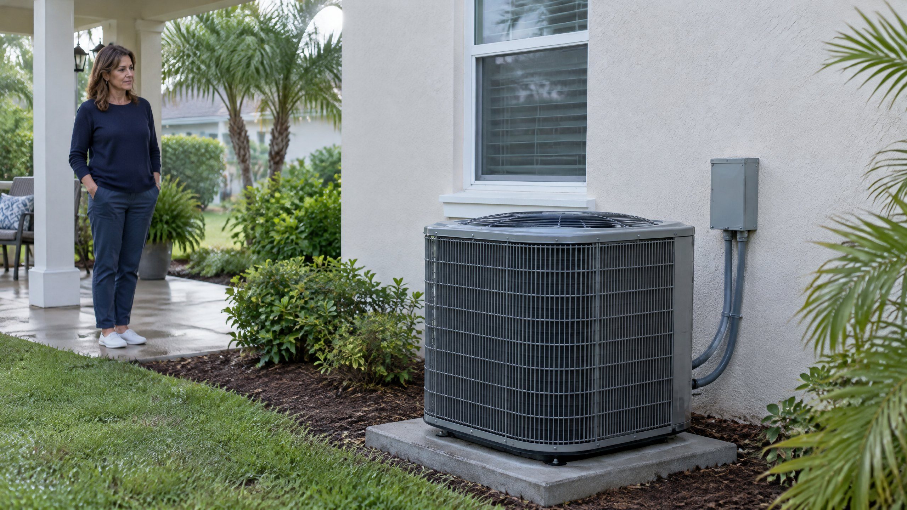

First confirm which fan and operating mode you mean
The outdoor fan and the indoor blower are different components. A thermostat's Fan setting concerns indoor circulation; it is not a direct command to run the outdoor fan continuously. Our Auto versus On fan-setting article covers that separate indoor-air question.
This explanation concerns an air-source Heat Pump selected to Heat. Confirm the equipment type from your records or owner instructions, not just the appearance of the outdoor cabinet. A cooling-only outdoor unit paired with another heating source has a different job. A quiet outdoor fan is not enough to identify the system or its current operating sequence.
If the thermostat is set to Cool and the outdoor unit hums while its fan remains still, use our cooling-mode stopped-fan guidance. Do not transfer the heating-mode defrost explanation to an unresolved cooling symptom.
Why can defrost intentionally stop the outdoor fan?
During Heat Pump heating, the outdoor coil absorbs heat from outside air. Under certain temperature and moisture conditions, frost can form on that coil. InterNACHI explains that accumulated frost interferes with heat transfer and must be removed through the equipment's defrost operation. [1]
In the reverse-cycle method described by both InterNACHI and Natural Resources Canada, the system temporarily changes refrigerant direction to warm the outdoor coil. The outdoor fan is stopped during this process so less of that heat is carried away. The fan pause is part of the intended sequence, not necessarily a failed motor. [1] [2]
When that defrost sequence ends, the equipment returns to heating operation. What matters is the whole transition and recovery, rather than a single glance at a stationary blade. This article does not establish that your particular unit is in defrost from a description, photograph or sound.
Carrier's service manual SM10-09 for specified R-410A packaged products gives a concrete example: the defrost control turns the outdoor fan off while refrigerant warms the outdoor coil. It is not operating guidance for every split-system or Mini Split Heat Pump. Use the applicable model literature, not that example's settings, for an installed unit. [3]
Why is there no universal waiting time?
Defrost controls differ. Natural Resources Canada describes demand-based controls that monitor operating conditions and time-temperature arrangements that use a timer or coil sensor. [2] Those are different ways of deciding when to start or end a sequence; a generic online interval is not the specification for every unit.
Use the owner instructions for the installed equipment and ask the service team how that model's sequence should resolve. Do not treat a fixed number of minutes, a weather-app temperature or another home's fan pattern as proof that yours is operating correctly.
For Tampa and North Tampa households that use heating less often than cooling, an unfamiliar fan pause can be especially noticeable. Location still does not identify the control strategy. Report the selected mode, what the equipment did next and whether the rooms resumed warming instead of deciding from the calendar alone.
Does indoor air or an AUX indicator confirm defrost?
Not by itself. Natural Resources Canada explains that supplementary heating may be used during defrost, depending on the installation. InterNACHI also describes differing indoor responses. [1] [2] Do not assume every home has the same backup heat, blower behavior or thermostat label.
An AUX display is a separate status clue, not confirmation of why the outdoor fan stopped. Our AUX heat explanation covers supplemental heating and why its appearance can have different contexts. Turning the indoor fan to On does not establish that the outdoor unit's defrost controls work.
Ask about a documented sequence rather than trying to force a response. Do not select Emergency Heat as a fan test or change installer settings to suppress an indicator. If the Heat Pump is not heating, contact the service provider for guidance on the appropriate temporary operating mode.
What can you record without touching the equipment?
Start with the thermostat: selected mode, displayed room temperature, target and any existing message. Note whether the outdoor fan was running before the pause, whether it resumed and whether normal warmth returned. An observation that the fan stopped and restarted is different from a fan that never resumed while the home stayed cold.
From an ordinary accessible position, describe any visible frost and whether it appeared to clear. Do not open a panel or approach a moving blade to get a better view. A short recording from a distance can document the sequence, but it cannot confirm a motor, sensor or refrigerant diagnosis.
Record when the behavior began and whether controls or equipment were recently changed. Do not repeatedly switch modes, reset breakers or create another cycle to collect evidence. Leave the grille closed; do not push the fan, chip ice from the coil or bypass a protective control.
When should a stopped fan lead to a repair assessment?
Request Heat Pump repair assessment when the fan remains stopped without an explained operating reason, normal heating does not resume or the pattern repeatedly leaves the home cold. Persistent ice or a changed mechanical sound also deserves attention rather than being automatically labelled defrost. InterNACHI notes that unsuccessful defrost can leave the outdoor coil heavily iced and that diagnosis goes beyond a visual inspection. [1]
A technician should establish whether the controls intentionally withheld the fan command, whether the commanded fan responded and whether the system completed its heating sequence. That separates an expected pause from a condition needing further electrical, mechanical or control assessment. A stationary blade alone does not justify a particular replacement part.
Ask the contractor to explain the observed sequence and the evidence behind any proposed repair. If the concern includes a thermostat request that does not match the equipment response, discuss thermostat repair assessment as part of the investigation, not automatic replacement. For ongoing care, ask about a Heat Pump Tune-Up appropriate to the actual equipment; maintenance does not eliminate the need for defrost.
Frequently Asked Questions
Does a stopped outdoor fan always mean the motor is bad?
No. A Heat Pump may intentionally stop its outdoor fan during a documented defrost sequence in heating mode. A persistent stopped fan with poor heating still needs assessment. The operating mode, control command and actual response must be established before selecting a repair.
Should the outdoor fan restart after defrost?
In the conventional reverse-cycle sequence described here, the system returns to heating after defrost. Check the installed model's instructions for its exact operation. Report a fan that does not resume along with unresolved heating rather than waiting for a universal online time limit.
Does changing the thermostat fan to On restart the outside fan?
The thermostat's fan setting concerns indoor circulation, not a direct override of the outdoor fan's control sequence. Do not use it, repeated mode changes or installer settings to force a restart. Have unexplained outdoor behavior assessed.
Can I assume defrost if the fan stops while cooling?
No. This explanation concerns Heat Pump heating. A stopped outdoor fan during an unresolved cooling call is a different symptom. Follow the cooling-mode stopped-fan guidance and request assessment rather than assuming the heating defrost sequence applies.
Editorial Source Review & Publisher
Published by On The Way Heating & Air. This local, family-rooted company uses recognized technical and government guidance to explain an operating distinction, not to diagnose a fan from a photograph. The installed equipment's documentation and measured response determine whether a pause is expected or a repair is needed.
Sources
- InterNACHI — Defrost Cycle of a Heat Pump. Heating-mode frost, reverse-cycle defrost, outdoor-fan shutdown and return to heating. Its generic timing and temperature examples are not used as universal limits.
- Natural Resources Canada — Heating and Cooling With a Heat Pump. Heating, the common defrost sequence, differing control strategies and supplementary heating. Canadian climate, costs, sizing and electrical-service recommendations are not applied to Tampa.
- Carrier — Service Manual SM10-09, July 2020 (PDF). A model-scoped packaged-product example of intentional outdoor-fan shutdown during defrost, not universal control settings or homeowner service instructions.